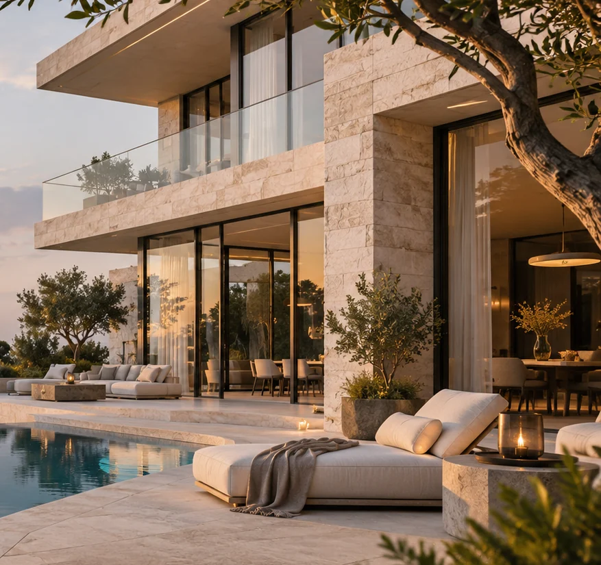

02 — ARCHITECTURE / SPATIAL CONCEPT
Spaces shaped
by light.
NOT A REAL CONSTRUCTION PLAN OR APPROVED DEVELOPMENTTHE MASTERPLAN
A quieter
geometry.
A deliberately simple spatial diagram: a sea-facing courtyard, living wing, sheltered garden and open horizon. Illustrative only.
- 01Arrival court
- 02Garden residence
- 03Water terrace
- 04Private rooms
NORTH ↑
01 ARRIVAL
02 RESIDENCE
04 PRIVATE
03 WATER
LANDSCAPED COURT
ILLUSTRATIVE SPATIAL DIAGRAM · NOT TO SCALE

MATERIAL PALETTE / CONCEPTStone. Shadow.